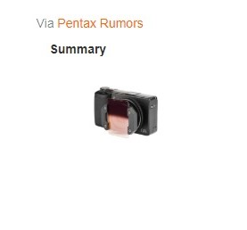

NiSi has released a new square filter holder system designed for use with the Ricoh GR III, priced from £43.
Available in both Starter and Professional kits, NiSi’s Filter System for the Ricoh GR III system is made of aluminium alloy and can hold up to two square filters. The device also supports 360-degree rotation.
The Starter Kit comes with a graduated neutral density filter (GND8) and a polariser filter, as well as the holder and a carry pouch.
The Professional Kit includes the same items as the Starter Kit but adds a natural night filter and an IR neutral density filter (ND8).
The NiSi Starter Kit for Ricoh GR III is priced £43/$49, or £53/$65 for the Professional Kit.
You can buy the new NiSi kits from Amazon UK and Amazon US.
Article Name
NiSi launches share filter holder kit for Ricoh GR IIIDescription
NiSi has released a new square filter holder system designed for use with the Ricoh GR III, priced from £43.Author
Jeff Meyer